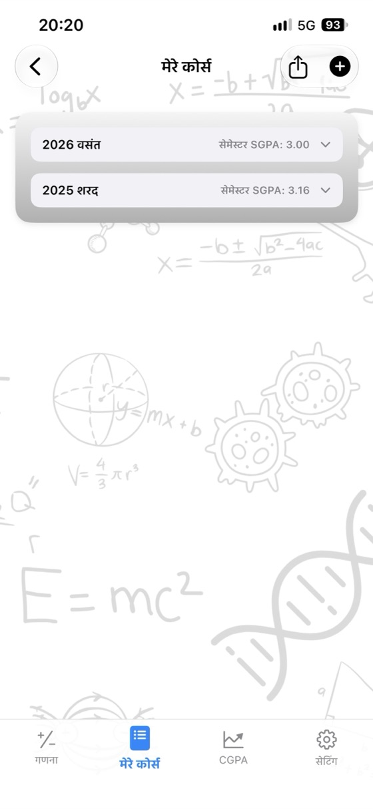
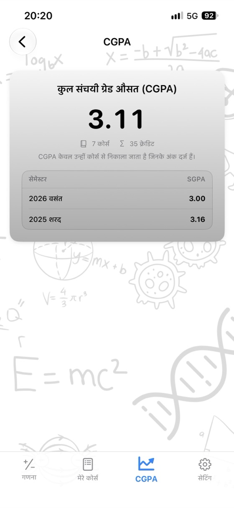
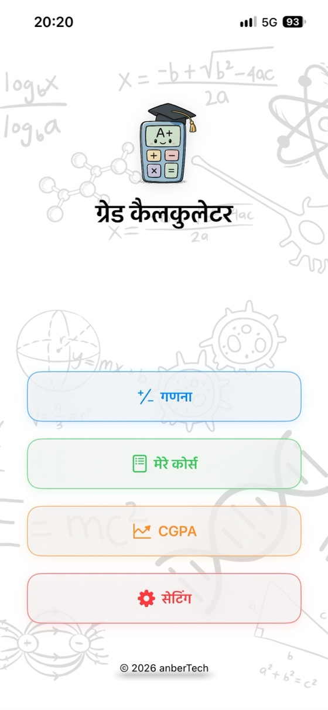
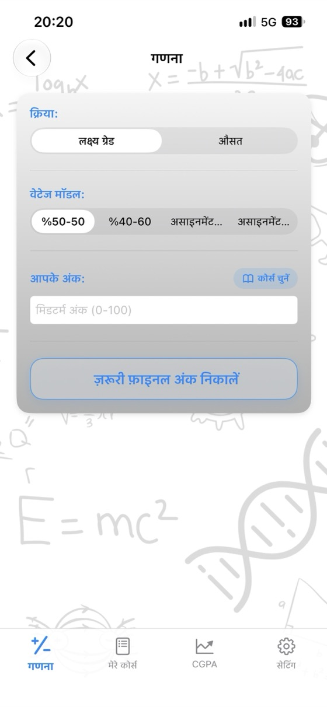
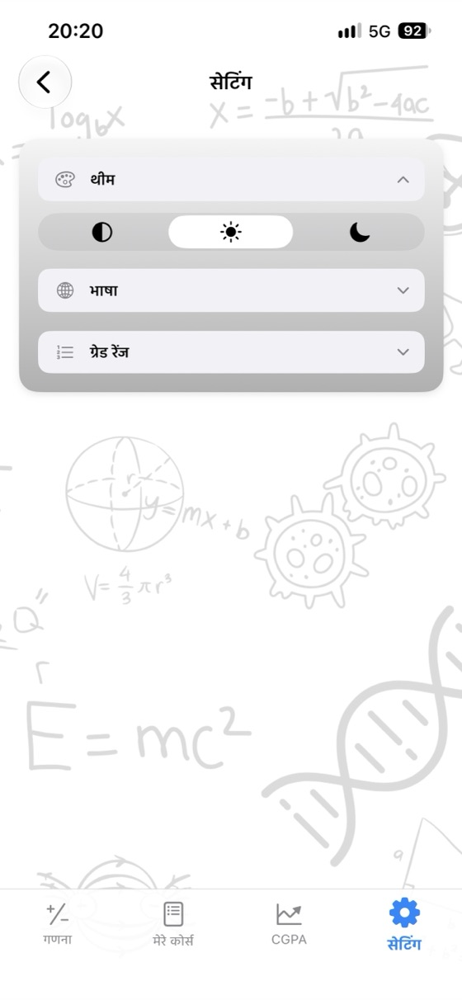

अपना ग्रेड जानें,
अपना भविष्य प्लान करें।
कोर्स का औसत, ज़रूरी फ़ाइनल परीक्षा के अंक और आपका GPA सब एक ही ऐप में। कोई विज्ञापन नहीं, कोई अकाउंट नहीं, पूरी तरह ऑफ़लाइन।
- ✓ मुफ़्त
- ✓ कोई विज्ञापन नहीं
- ✓ कोई अकाउंट नहीं
- ✓ ऑफ़लाइन


अभी गणना करें
ऐप डाउनलोड करने से पहले इसे यहाँ आज़माएँ। मान बदलें और परिणाम तुरंत अपडेट हो जाएगा।
फ़ाइनल परीक्षा वेटेज: 60%
फ़ाइनल परीक्षा वेटेज: 60%
मुफ़्त कैलकुलेटर
बिना कुछ डाउनलोड किए इन्हें सीधे अपने ब्राउज़र में इस्तेमाल करें। साइन-अप की ज़रूरत नहीं है, और आपके द्वारा दर्ज किए गए ग्रेड कभी आपके डिवाइस से बाहर नहीं जाते।
ग्रेड कैलकुलेटर ही क्यों?
कोर्स का औसत
मिडटर्म, फ़ाइनल और असाइनमेंट के अंक उनके वेटेज के साथ दर्ज करें और तुरंत अपना औसत व लेटर ग्रेड देखें।
ज़रूरी फ़ाइनल ग्रेड
हर लेटर ग्रेड पाने के लिए फ़ाइनल परीक्षा में ज़रूरी न्यूनतम अंक एक ही स्क्रीन पर देखें।
GPA और CGPA ट्रैकिंग
अपने कोर्स सेमेस्टर के अनुसार सेव करें; आपका सेमेस्टर GPA और कुल संचयी ग्रेड औसत (CGPA) अपने आप अपडेट होते हैं।
आपका अपना ग्रेडिंग स्केल
अपने कॉलेज या यूनिवर्सिटी के अनुसार लेटर-ग्रेड रेंज और ग्रेड पॉइंट्स में बदलाव करें।
PDF ग्रेड रिपोर्ट
एक टैप में अपने कोर्स और औसत को PDF के रूप में शेयर करें।
17 भाषाएँ
अंग्रेज़ी, स्पैनिश, जर्मन, जापानी, अरबी, तुर्की, हिंदी और अन्य भाषाओं में उपलब्ध।
गोपनीयता सर्वोपरि
कोई अकाउंट नहीं, कोई विज्ञापन नहीं, कोई ट्रैकिंग नहीं। आपका डेटा आपके डिवाइस पर ही रहता है।
ऑफ़लाइन काम करता है
इंटरनेट की ज़रूरत नहीं: परीक्षा के दिनों में, लाइब्रेरी में या कहीं भी इस्तेमाल करें।
ऐप की एक झलक



अक्सर पूछे जाने वाले प्रश्न
मैं अपने कोर्स का औसत (course average) कैसे निकालूँ?
प्रत्येक अंक को उसके वेटेज से गुणा करें और उन्हें जोड़ दें। 40% मिडटर्म और 60% फ़ाइनल होने पर: औसत = मिडटर्म × 0.40 + फ़ाइनल × 0.60। यदि मिडटर्म में 62 और फ़ाइनल में 75 हैं, तो 62 × 0.40 + 75 × 0.60 = 69.8 होगा। अगर कोई असाइनमेंट भी है, तो उसका वेटेड ग्रेड भी जोड़ें; सभी वेटेज का योग 100% होना चाहिए।
पास होने के लिए मुझे फ़ाइनल परीक्षा में कितने अंक चाहिए?
ज़रूरी फ़ाइनल = (लक्षित औसत − मिडटर्म × मिडटर्म वेटेज) ÷ फ़ाइनल वेटेज। 40% वेटेज वाले मिडटर्म में 55 अंक और पास होने के लिए 50 औसत होने पर: (50 − 22) ÷ 0.60 = 46.7, यानी आपको फ़ाइनल में कम से कम 47 अंक चाहिए। ग्रेड कैलकुलेटर यह गणना हर लेटर ग्रेड के लिए एक साथ कर देता है।
GPA की गणना कैसे की जाती है?
प्रत्येक कोर्स के ग्रेड पॉइंट्स (A = 4.0, B = 3.0 …) को उसके क्रेडिट से गुणा करें, उन सभी को जोड़ें और कुल क्रेडिट से भाग दें। इसका परिणाम 4.0 स्केल पर आपका ग्रेड पॉइंट एवरेज (GPA) होता है।
क्या लेटर-ग्रेड की रेंज हर जगह एक जैसी होती है?
नहीं। अलग-अलग देशों, यूनिवर्सिटी और यहाँ तक कि अलग-अलग कोर्स में भी रेंज और ग्रेड पॉइंट्स भिन्न होते हैं। ऐप में आप अपने संस्थान के अनुसार ग्रेडिंग स्केल को सटीक रूप से एडिट कर सकते हैं।
न्यूनतम फ़ाइनल ग्रेड क्या होता है?
कुछ कॉलेजों और यूनिवर्सिटी में यदि आपके फ़ाइनल परीक्षा के अंक एक निश्चित सीमा (जैसे 30, 45 या 50) से कम हों, तो कुल औसत पर्याप्त होने पर भी आपको फेल माना जाता है। न्यूनतम अंक दर्ज करने पर ज़रूरी फ़ाइनल ग्रेड की गणना में इसे ध्यान में रखा जाता है।
क्या ग्रेड कैलकुलेटर मुफ़्त है?
हाँ। यह ऐप App Store पर बिल्कुल मुफ़्त है—इसमें कोई विज्ञापन, कोई सब्सक्रिप्शन और कोई इन-ऐप खरीदारी नहीं है। इस वेबसाइट पर दिए गए सभी कैलकुलेटर भी मुफ़्त हैं।
मेरे ग्रेड कहाँ सेव होते हैं?
केवल आपके अपने डिवाइस पर। आपको किसी अकाउंट की ज़रूरत नहीं है और कोई भी डेटा सर्वर पर नहीं भेजा जाता। वेब कैलकुलेटर में दर्ज किए गए ग्रेड कभी आपके ब्राउज़र से बाहर नहीं जाते।
क्या इसका Android वर्ज़न उपलब्ध है?
Android वर्ज़न जल्द ही Google Play पर आ रहा है। अभी यह ऐप iPhone और iPad (iOS 17.6 या उसके बाद के वर्ज़न) के लिए App Store पर उपलब्ध है।
अपने सभी कोर्स एक ही जगह ट्रैक करें
मुफ़्त। कोई विज्ञापन नहीं। कोई अकाउंट नहीं।